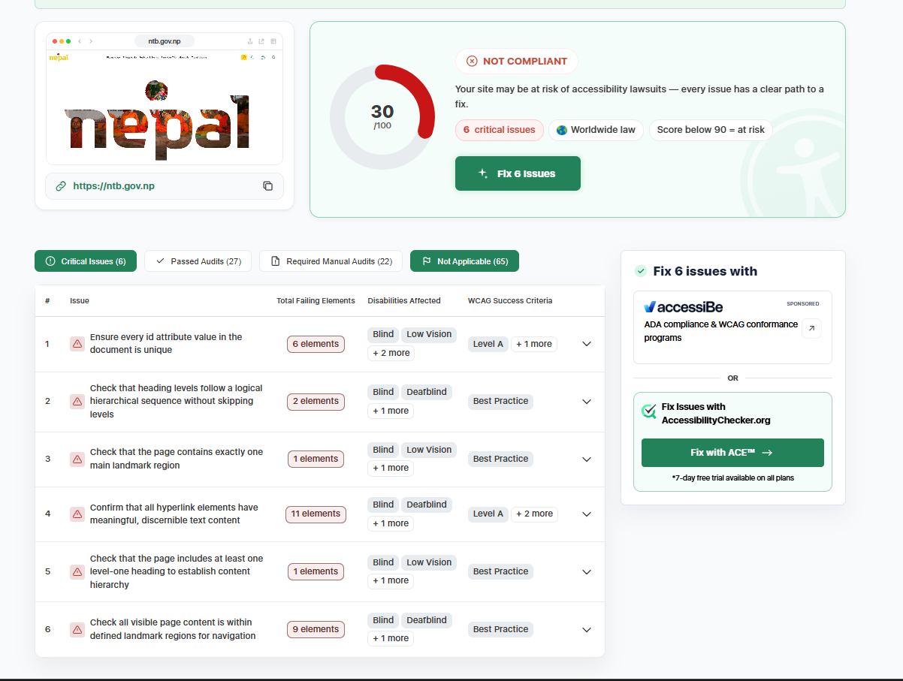

Website Basics
- Website name
- Nepal Tourism Board
- Website URL
- https://ntb.gov.np/
Accessibility Checker Screenshot

Target Audience
The site is for people planning to visit Nepal, like tourists looking for places to go and people who want to learn about Nepal's culture, nature, and travel spots. Tourism businesses may also use it.
Site Organization
The main menu at the top has Places to go, Things to do, Festivals & Events, Plan Your Trip, About Us, and Travel Update. Each menu item opens a drop-down with links grouped under headings. For example, Plan Your Trip is split into Trip Ideas, About Nepal, Travel Details, and Book Your Trip.
The homepage also has sections for places to go, season highlights, events and festivals, and travel inspiration. Visitors can browse places like Everest, Pokhara, Kathmandu, and Lumbini.
CRAP Design Principles
Contrast: The homepage uses large photos and headings that stand out from the rest of the page. This draws attention to featured places.
Repetition: The cards and headings use the same style in different sections, so the page feels consistent.
Accessibility Audit Score
30 out of 100
The Accessibility Checker marked the site as "Not Compliant" and listed six critical issues. They include duplicate ID values, heading levels out of order, a missing level-one heading, link text that may not be clear, and content outside landmark regions. The checker also showed 27 passed audits and 22 that need a manual check.
Effectiveness
The site gives useful information about places and tourism in Nepal, and the sections help visitors find ideas for where to go. But the accessibility problems may make some tasks harder for people who use screen readers.
Efficiency
I tested one task: finding the Book Experience page. It took two clicks (Plan Your Trip, then Book Experience), so basic tasks are quick. The downside is that most links are hidden inside drop-down menus, so users have to hover or click to find things, and the drop-downs are big and take a while to scan.
Engagement
The photos and travel topics make the site interesting and fit its purpose of promoting tourism. Fixing the accessibility problems would help more people enjoy using it.
Recommendations
- Give every element ID a unique value.
- Use heading levels in order, with one
h1and thenh2andh3. - Use link text that clearly says where the link goes.
- Put page content inside landmarks like
header,nav,main, andfooter. - Test with a keyboard and a screen reader, then run the checker again.